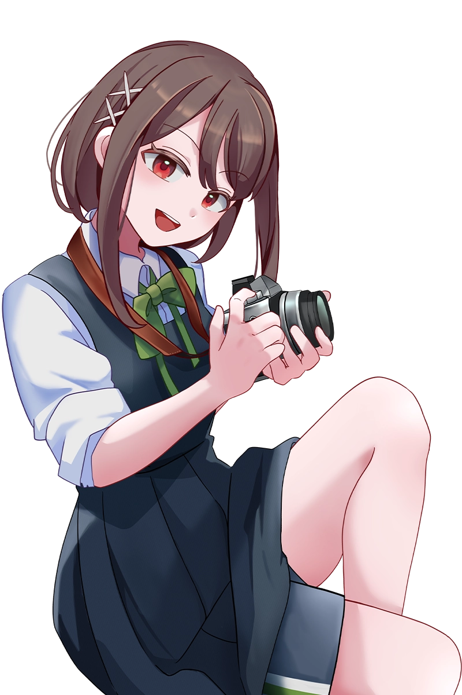
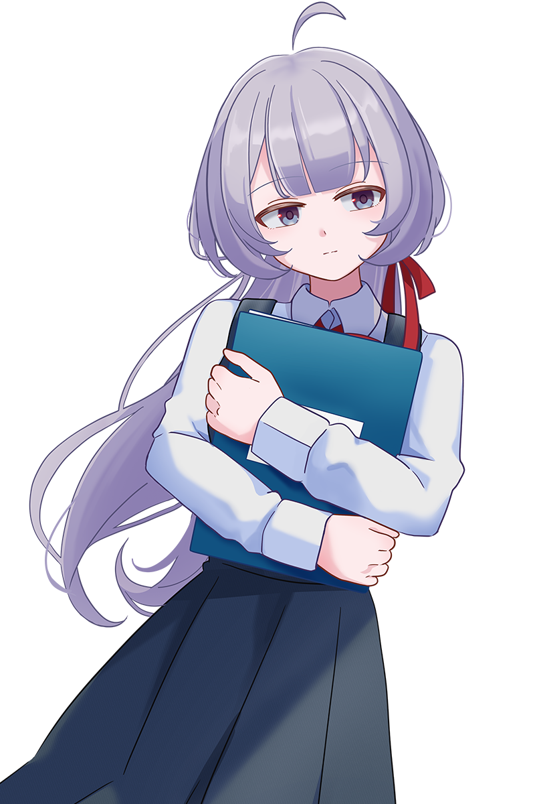

Introduction あらすじ
光の記憶をほどく時、
あなたは選択をする。
とある展示会で見た一枚の写真に惹かれ、
聖蘭女学院へ入学した祈梨。
昔すれ違った幼馴染・唯愛と再会し、
共に写真部へ入部するが、
入学のきっかけとなった
その写真を知る者は誰もいない――。

Character キャラクタ―紹介

「あの時以上の写真を撮れば良いんだ！」
「これが学食とは……豪華すぎる……」
あやせ いのり
綾瀬 祈梨 cv.mernor
Voice
Voice
- 誕生日：7/30（高校1年生）
- 身長：164cm
- 体重：52kg
- BWH：77/64/82
- 好きな食べ物：ハンバーグ
「わさお、さっきは撮らせてくれてありがとうね。よしよし」
「ふふふ、いのりは変わらないね」
あいさか ゆあ
相坂 唯愛cv.mernor
Voice
Voice
- 誕生日：11/8（高校1年生）
- 身長：157cm
- 体重：49.8kg
- BWH：89/60/86
- 好きな食べ物：甘いもの全部

「写真部と、この写真同好会は対立関係にあるの。だから、帰って」
「長い。聞いてないから。邪魔しないでくれる？」
ふじ ゆかり
藤 ゆかりcv.もん
Voice
Voice
- 誕生日：2/14（高校3年生）
- 身長：154cm
- 体重：40kg
- BWH：80/54/82
- 好きな食べ物：羊羹（こしあん）
Movie オープニングムービー
Information 製品情報
- タイトル
- Re：focus ～光の記憶をほどく時～
- 対応言語（音声）
- 日本語
- 発売予定時期
- 2026年 夏頃
- 販売予定サイト
- DLsite / BOOTH など
- 対応環境
- PC（Windows 11）
- Staff
- [サークル名] mmmn's
[シナリオ] 黒江思案
[原画・グラフィックス] ほしこはく @_kohaku_hoshi
[SD原画] mernor
[音楽・BGMプロデュース] ぷるぷるハンモック
[オープニングテーマ] 歌：mernor ／ 作詞・作曲・編曲・動画：ぷるぷるハンモック
[原案・デザイン] もん